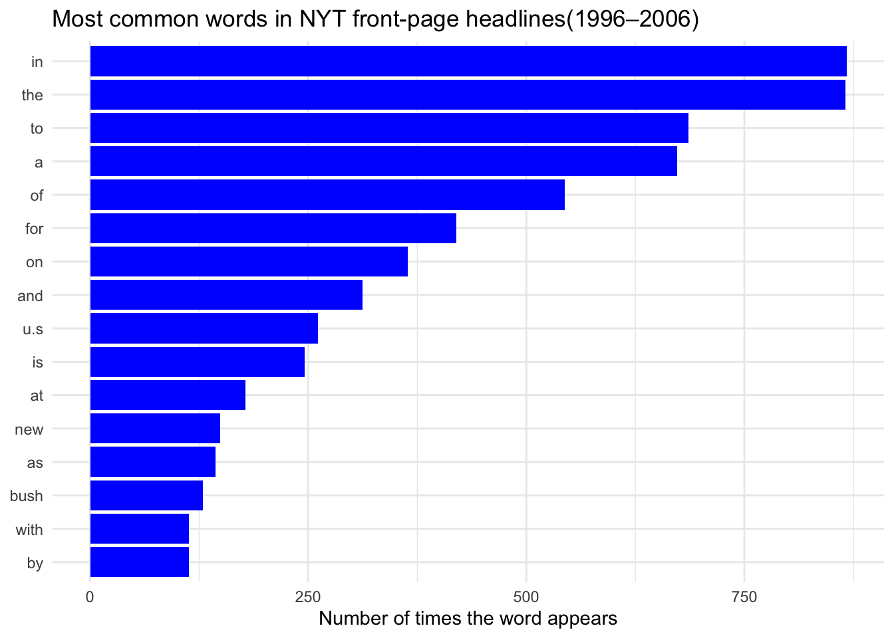
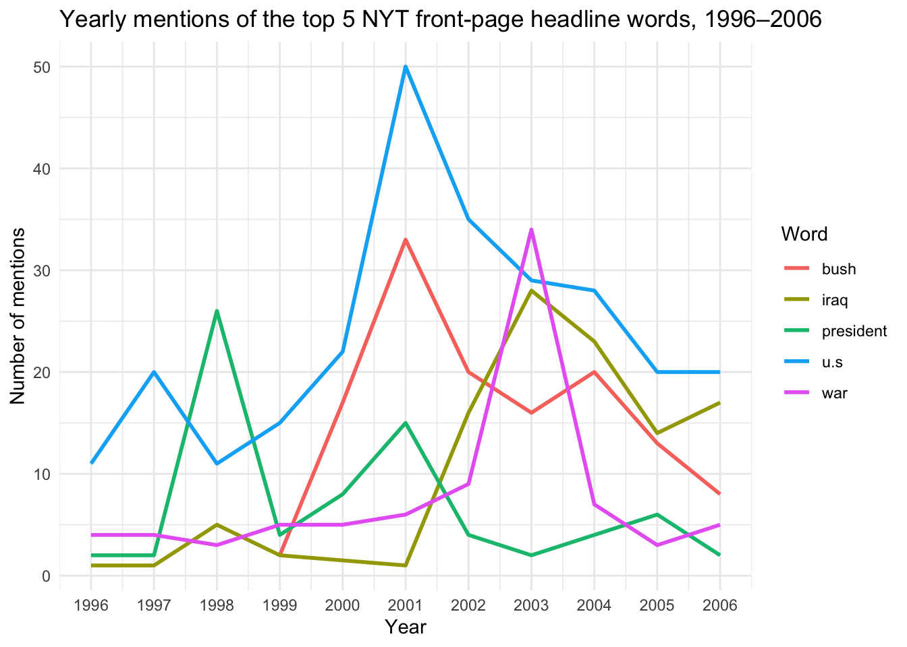

Show code
library(tidyverse)
library(RTextTools)
data(NYTimes)Andy Xiao
This page analyzes about 3,100 New York Times headlines from 1996 to 2006. WE explore two questions: which words dominated the headlines during this decade and how that vocabulary changed over time. The period covers the Clinton impeachment, the 2000 election, 9/11 and the Iraq War, so we would expect the headlines to reflect a shift in the news. First we must load the data and import tidyverse.
The data includes 5 columns and 3,104 rows, the columns include:
- Article_ID: Id for each headlines
- Date: Publication date stored as a string in the form “1-Jan-96”
- Title: Headline
- Subject: Summary of story
- Topic.Code: Number for the topic
Because Date is stored as text, we first need to extract the year. str_extract() with the regular expression “\d{2}$” takes the last two digits of each date. Then if_else() turns the two digits into a full year: values of 96 or higher belong to the 1900s, and everything else belongs to the 2000s. Without this step, years like “03” would sort before “96”.
Before analyzing the headlines, we need to clean the text so that the same word is always counted the same way. For example, some headlines are written in all caps, so “IRAQ” and “Iraq” would be treated as different words if left alone. - str_to_lower() converts every headline to lowercase, which fixes the capitalization problem. - str_remove_all() removes all possesives in order to better match key words with the pattern “’s\\b” this removes possessives, The \b (word boundary) makes sure the “‘s” is only removed when it ends a word. - str_extract_all() takes in all the words, [a-z]+ extracts most basic words with letters in a row, ([’.][a-z]+)* extracts words with periods or apostrophes in them as NYT convention denotes United States as U.S. - unnest() puts each word in its own row, so we can count and filter individual words.
Now that we have cleaned the words, we can find the top 15 words used through each headline from 1996-2006
# A tibble: 16 × 2
word n
<chr> <int>
1 in 867
2 the 866
3 to 686
4 a 673
5 of 544
6 for 420
7 on 364
8 and 312
9 u.s 261
10 is 246
11 new 205
12 at 178
13 as 144
14 bush 129
15 by 113
16 with 113This list is dominated by filler words like “the”, “in”, and “to”, which appear in almost every headline and tell us nothing about the news. To find the meaningful words, we filter them out using a list of common filler words.
filler_words <- c(
"the", "a", "an", "of", "in", "to", "and", "for", "on", "at", "by",
"with", "as", "is", "it", "its", "from", "that", "this", "be", "are",
"was", "were", "has", "have", "will", "not", "or", "but", "after",
"over", "into", "up", "out", "more", "says", "say", "said", "than",
"who", "what", "how", "why", "when", "about", "new", "no", "overview", "report", "special", "plan", "case", "big", "nation", "city", "may", "his")
nyt_words_clean <- nyt_words |>
filter(!word %in% filler_words)
top_words <- nyt_words_clean |>
count(word, sort = TRUE) |>
slice_max(n, n = 15)
top_words# A tibble: 15 × 2
word n
<chr> <int>
1 u.s 261
2 bush 129
3 iraq 108
4 war 85
5 president 71
6 campaign 65
7 clinton 61
8 york 56
9 g.o.p 51
10 china 50
11 challenged 48
12 house 48
13 court 43
14 politics 41
15 race 39Now we can see a more interesting list of the 15 most used words throughout 1996-2006, but an interesting oversight that occured is that the word york appears 56 times, this obviously is meant to be New York, but the data cleaning split the two words up. We can fix this by implementing a lookaround in our data pipeline to find phrases with the word “new” before a space and “york” after this space, and combine the two into newyork, then the mutate function will turn it back to new york. This ensures we are finding specifc instances on New York together rather than a case where york is on its own
updated_nyt_words <- NYT |>
mutate(
word = Title |>
str_to_lower() |>
str_replace_all("(?<=\\bnew) (?=york\\b)", "") |>
str_remove_all("'s\\b") |>
str_extract_all("[a-z]+(['.][a-z]+)*")
) |>
unnest(word) |>
mutate(word = if_else(word == "newyork", "new york", word))
nyt_words_clean <- updated_nyt_words |>
filter(!word %in% filler_words)
top_words <- nyt_words_clean |>
count(word, sort = TRUE) |>
slice_max(n, n = 15)
top_words# A tibble: 15 × 2
word n
<chr> <int>
1 u.s 261
2 bush 129
3 iraq 108
4 war 85
5 president 71
6 campaign 65
7 clinton 61
8 new york 56
9 g.o.p 51
10 china 50
11 challenged 48
12 house 48
13 court 43
14 politics 41
15 race 39Next, we can construct a visual to show the most common words used in the NYT headlines. fct_reorder() orders the bars so that the most frequent word appears at the top.

From this visualization, “U.S.” is by far the most common word, appearing about 261 times, roughly twice as often as any other word. The graph also shows that Bush received about twice as much attention as Clinton, even though the two presidents cover roughly the same amount of time in the dataset, with Clinton from 1996 to 2000 and Bush from 2001 to 2006. This suggests that the Bush years produced more front-page news centered on the president, likely because of 9/11 and the Iraq War. In foreign affairs, coverage centered mainly on Iraq, with China appearing to a lesser extent.
While this visual gives a good depiction into what the common language in headlines during this time period was, it is unable to convey the trends in when each word would appear. Therefore, constructing a visual representing the trend in word usage can be beneficial to gain insight into when these words are actually being used. Here we are taking the 5 most common words and tracking them throughout 1996-2006
nyt_words_clean |>
mutate(word = fct_lump_n(word, n = 5)) |>
filter(word != "Other") |>
count(year, word) |>
ggplot(aes(x = year, y = n, color = word)) +
geom_line(linewidth = 1) +
scale_x_continuous(breaks = 1996:2006) +
labs(
title = "Yearly mentions of the top 5 NYT front-page headline words, 1996–2006",
x = "Year",
y = "Number of mentions",
color = "Word"
) +
theme_minimal()
From this visual we can see large spikes in these terms. We can see a large spike in the terms “iraq” and “war” in 2003 due to the start of the Iraq war. Additionally in 1998 there’s and unusual spike in usage of “president” in 1998 and this is likely due to the impeachment of Bill Clinton in 1998. Also there are large spikes with the terms “U.S.” and “Bush” in 2001 due to 9/11.
Analyzing the words in these headlines shows a clear shift in what dominated the New York Times between 1996 and 2006. In the late 1990s, headlines focused mainly on domestic politics, such the impeachment of Bill Clinton, which caused the spike in “president” in 1998. After 2001, the focus shifted toward 9/11, the Bush administration and the Iraq War, with “Iraq” and “war” peaking in 2003.
One limitation of this analysis is that it only counts how often words appear, not what the headlines say about them. For example, “war” is counted the same way whether a headline is about the Iraq War or a political “war” over a bill.